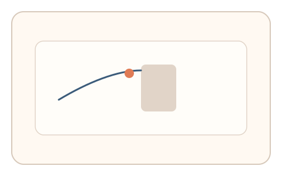
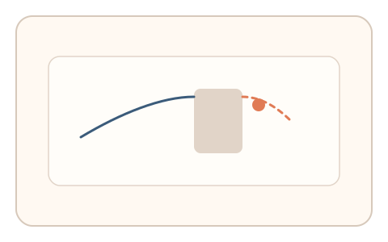
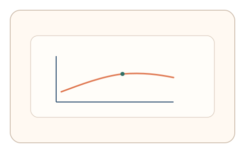

#59
视觉思考范式：扫描/错觉/全局-局部
已扩展
遮挡连续性预测
目标沿路径运动被遮挡，用户预测将要出现的位置或时间，利用预测误差分布验证连续性直觉。
概念原文
目标沿路径移动后被遮挡，用户预测其“将要出现的位置/时间点”并点击；记录预测误差与反应时分布。
依赖人类对物体连续性的直觉预测，而非图像识别。
研究背景
人类对物体连续运动具有强烈的预测倾向，遮挡期间会根据速度与方向进行内插预测。测量预测误差与反应时分布可形成稳定的直觉特征。
核心机制
- 目标沿路径运动后进入遮挡区域。
- 用户预测其将要出现的位置或时间并点击。
- 记录预测误差与反应时。
- 分析连续性预测的稳定性。
用户流程
- 步骤 1：用户观察目标沿路径运动。
- 步骤 2：目标被遮挡，用户预测出现位置。
- 步骤 3：系统记录误差与判定。
判定信号
预测误差分布
连续性预测误差具有稳定范围。
反应时与遮挡时长关系
遮挡时间越长预测误差越大，形成规律性。
判定逻辑
结合误差分布与反应时曲线判定；误差过低或过高且无规律判异常。
对抗面
- 脚本直接计算轨迹并预测位置
- 重放真实用户的点击序列
防御与缓解
- 随机化速度、方向与遮挡长度
- 引入轻微加速度变化降低预测性
- 叠加鼠标轨迹与微时序信号进行多信号验证
可达性与风险
提供更慢速度或替代任务模式，避免对运动敏感用户造成负担。
- 不同设备刷新率影响运动节奏
- 遮挡时间过长增加误差
可视化状态

状态 1：运动路径
目标沿路径运动接近遮挡区域。

状态 2：遮挡预测
目标被遮挡，用户预测位置。

状态 3：误差判定
分析预测误差与反应时。
参考资料
Motion perception
说明运动连续性与预测机制。
Object permanence
说明遮挡期间对物体连续性的认知。